Design of a low-cost Vector Network Analyzer for the characterization of dielectric media
Final Degree Project.
Description
In this post, I'll be summarizing for you my Final Degree Project for the Electronics and Automatic Industrial Engineering degree from the Higher Technical School of Industrial Engineering of the Polytechnic University of Cartagena.
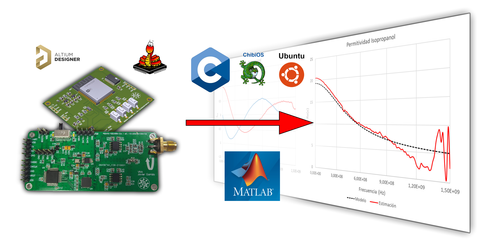
Introduction
This project results from the need to characterize dielectric media in a precise, cheaper and faster way. The measurement of permittivity is very important in scientific, industrial and medical applications, being essential to know its value in the main dielectric materials. Thus, the project is focused on the design of a small, portable and low-cost Vector Network Analyzer (VNA) that offers good quality and precision of measurement and a fast speed for measurement and calibration in the characterization of dielectric media.
There is a wide variety of methods to determine the dielectric properties of materials. To carry out the measurements, a VNA is usually used as a source, which allows obtaining data about the reflection and transmission of the wave generated at different frequencies.
The designed VNA has a microcontroller to manage the entire system and perform the signal processing and data acquisition, in addition to other components, such as oscillators, signal generator at different frequencies, frequency mixers or audio codec, among others. A single measurement port has been implemented to perform reflection measurements. Moreover, an SDI-12 communication system has been implemented for data acquisition through a datalogger.
First of all, a preliminary study has been carried out on the functioning of a VNA. Next, the electronic design of a VNA prototype has been developed using PCB design tools. Then, all the necessary components have been acquired and the VNA prototype was assembled, as well as the programming of the microcontroller in C language, which will be in charge of managing the system. Finally, experiments and tests with the functional prototype have been carried out to validate its operation.
Design of the VNA
A vector network analyzer or VNA is an instrument that allows to analyze the properties of electrical networks, especially the dispersion parameters or S parameters, at high frequencies, which give information about the reflection and transmission of electrical signals. It offers a measure of the magnitude and phase (vector) of the dispersion parameters by sweeping in frequency. Also, from the dispersion parameters data, the dielectric properties of the transmission media under test can be determined.


To obtain the characteristics of the devices under test, the vector network analyzer emits a sinusoidal test signal at a certain frequency that is applied to the device, which provides another sinusoidal signal as a response. The analyzer measures the difference in amplitude and phase between both signals.

Schematic design
First of all, the vector network analyzer will have the power part, which will be responsible for providing power to the entire system. It will also have a signal generator, which will perform the frequency sweep and provide the test signal. In addition, it will have signal separators made up of voltage dividers and a Wheatstone bridge for the reflection port. To all of the above, signal receivers are added, formed by frequency mixers and a codec, which will be in charge of receiving and processing the signal and, finally, there is a processor that will process the signal coming from the receiver, as well as external ports to be able to access certain parts of the processor from the outside.
The block and schematic diagrams corresponding to the design that has been made for a 2-port VNA and a 1-port VNA are shown below. In this project, attention is focused on the design and implementation of the 1-port VNA, for which its block diagram, its schematic, its PCB are made, the prototype is physically manufactured and experiments are carried out with it. But the design of a 2-port VNA with more functionalities has been done for future work and applications.
Two-port VNA
The block diagram corresponding to the designed 2-port VNA is made up of a power supply part, a signal generator, signal separators, signal receivers, processor and display, and external ports, as shown in the picture.

The power comes from the USB, whose voltage passes through a filter and through a MCP73831T battery charge controller that is used to charge an external lithium battery. After this, it passes through the general switch and through a linear voltage regulator XC6206P331MR so that, before the regulator, +5 V is obtained and, after the regulator, VDD (3.3 V) is obtained. The VDD signal powers the oscillator, Si5351A signal generator, TLV320AIC3204 codec, STM32F072 microcontroller, LCD display and SD card. The +5 V signal powers the SA612AD frequency mixers. The battery will also power the microcontroller.
The Si5351A signal generator is powered by a 26 MHz VCTCXO oscillator which, in turn, is controlled by a DAC signal from the microcontroller. The Si5351A communicates with the microcontroller via I2C, and offers three signals: a signal for the local oscillator of the frequency mixers, the test signal that does the frequency sweep, and an MCLK clock signal that synchronizes the microcontroller and the codec.
After the signal generator are the signal separators. The local oscillation signal from the frequency mixers and the incident signal have a signal separator in the form of a resistive voltage divider. The reflected signal has as signal separators a voltage divider, a Wheatstone bridge for the reflection port and a voltage divider at the output of the latter. Finally, the transmitted signal has a balanced pi-shaped attenuator as a signal separator.
After the signal separators, the signal reaches the signal receivers. The signals coming from the signal separators enter the SA612AD frequency mixers, both the incident, reflected and transmitted signals as well as the local oscillation signal. At the output of the mixers, there will be the product of both input signals, which will be a signal at intermediate frequency, and which includes the sum and difference of the frequencies of the input signals. After the mixers, there is a low pass filter and, after that, the different signals enter the input channels of the TLV320AIC3204 codec. The codec has an ADC (analog-to-digital converter), communicates via I2C with the microcontroller, and sends to it via I2S the result of the digital processing of the incoming signals.
The processed signals reach the processor via I2S. The component that handles the processing is the STM32F072 microcontroller, which communicates via I2C with the codec and signal generator, controls the 26 MHz oscillator with a DAC signal, receives signals from a three-position rotary switch and a push button, communicates via SPI with the LCD screen and the SD card and exchanges data with the USB. The processor will display the data result on the LCD screen and you can export the data to an SD card.
Finally, there are external ports with which you can access different parts of the processor, which are the BAT1 port, which allows you to connect the external Lithium battery, the BOOT0 port, which allows you to bridge the BOOT0 pin of the microcontroller to update the Firmware, and port P1, which allows Firmware debugging and programming via SWD.
After the design and analysis of the block diagram for the 2-port VNA, its schematic has been developed, which offers the described functionalities. The schematic can be seen in the picture below.

One-port VNA
The block diagram corresponding to the design of the 1-port VNA is formed, in a similar way to the 2-port VNA, by a part that is responsible for the power supply of the system, a signal generator, signal separators, signal receivers, processor and external ports. This is the VNA that will be used in this project. The block diagram can be seen in the next picture.

The operation and the existing relationship between all the blocks that make up the 1-port VNA correspond to the explanation given for the 2-port VNA in the previous section, except for some differences. The 1-port version of the VNA does not have a battery charger or an external battery, the 26 MHz oscillator is not controlled by the microcontroller, it does not incorporate the transmission port, the attenuator or the SA612AD frequency mixer corresponding to the transmitted wave, it does not have the rotary switch or the push button, it does not incorporate the LCD screen or the SD card and it does not have the BAT1 port, adding the external port P2 that allows communication with the microcontroller through UART. In addition, the power supplies for all components are conveniently filtered, to reduce noise throughout the system.
The USB connector has also been changed to its four essential pins: two power pins and two data pins, to facilitate soldering, and a new I2C port has also been included that allows communication with the microcontroller externally through I2C. Once the block diagram for the 1-port VNA, which is the one that will be implemented in the project, has been designed and analyzed, its schematic design has been made, which can be seen in the following picture.

PCB design
For the design of the schematic and the PCB, the electronic design software Altium Designer has been used. Once the schematic has been made with all the components connected to each other, the PCB is generated. To do this, all the components used in the schematic are imported onto the PCB. Then, they are placed in the most optimal position possible, so that the lengths of the tracks are minimized as much as possible, and trying to occupy as little space as possible.

At the end of the placement of the components, we proceed to define the size that the board will physically have, indicating its edges and including the drills. Having all the components conveniently placed on the PCB, it remains to trace the tracks that will connect the components of the board to each other. The size of the tracks used has been 0.5 mm for the power part, 0.2 mm for the connections with the microcontroller pins and 0.3 mm for the rest of the tracks.
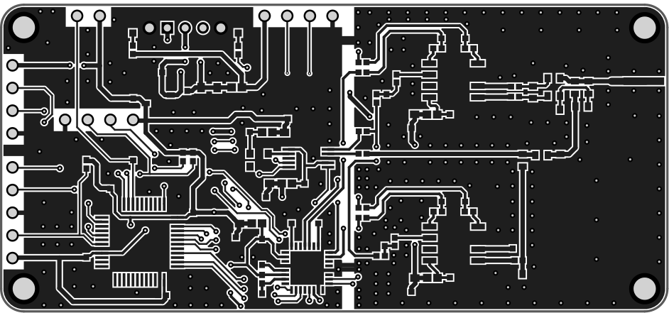
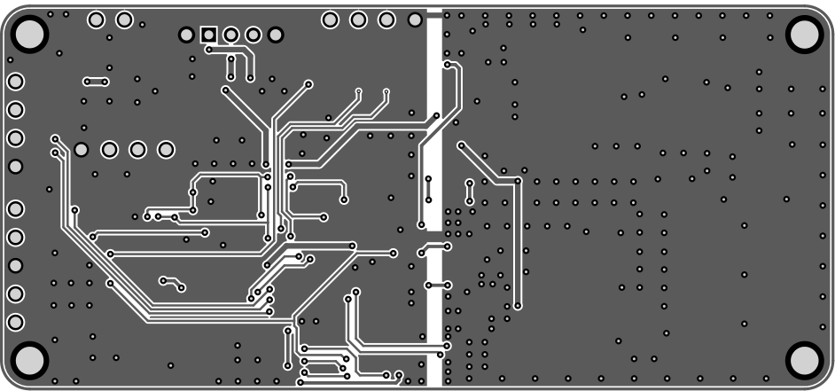
After tracing all the necessary tracks using both the top layer and the bottom layer, a ground plane is made on the board, which consists of pouring copper onto the entire board so that the tracks connected to the GND network join the plane and the tracks that are different are separated from the plane. In addition, to improve dissipation and increase connectivity between the two layers of the PCB, a series of vias have been made throughout the PCB, so that the GND plane is connected in many points in the two layers. Finally, the names of each of the components and of the pads have been placed, so that they are seen correctly. Also, a series of indications have been added, which are the logos, the author's name and the device name.
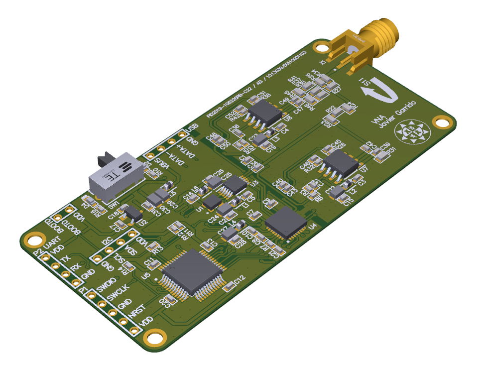
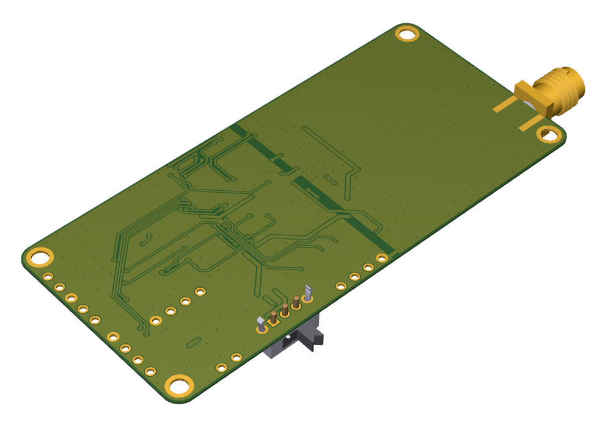
PCB Soldering
Once the PCB has been completely designed, the Gerber files are generated from Altium Designer, which contains the necessary information to manufacture the PCB and will be used to order it to JLCPCB. In addition, a stencil is ordered, which consists of a stainless steel template with holes that is placed on the PCB to apply the solder paste evenly in the required places.

First of all, the stencil is placed on the PCB by matching the holes of the stencil with the pads of the PCB. After that, the solder paste is applied with a spatula covering the entire hole area of the stencil, so that the paste will be applied evenly on the PCB pads. Afterwards, the components are carefully placed on the PCB, following a certain order to facilitate the work. We start with the smallest components, such as the resistors, capacitors, inductors, LEDs and the oscillator, and end with the largest ones, which are the voltage regulator, the signal generator, the audio codec, the frequency mixer, the microcontroller, the SMA connector, the slide switch and the USB.
After all the electronic components are placed, the PCB is introduced into a special oven for SMD (Surface-Mount Device) soldering, which progressively heats the solder paste according to a predetermined temperature profile. When the process ends, all the components are soldered in their corresponding place. Finally, the through-hole pins of the external ports are placed and soldered manually with a soldering station.
Once the assembly is done, a detailed visual check is made for pad joints after soldering in the oven due to excess of solder paste. Then, the conductivity between the tracks is checked, to verify the correct connection between the different components and to avoid short circuits that can damage components. After determining that there are no apparent errors, we proceed to power the board and verify that it works correctly. You can see the PCB fully soldered as well as the VNA dimensions in the following pictures.
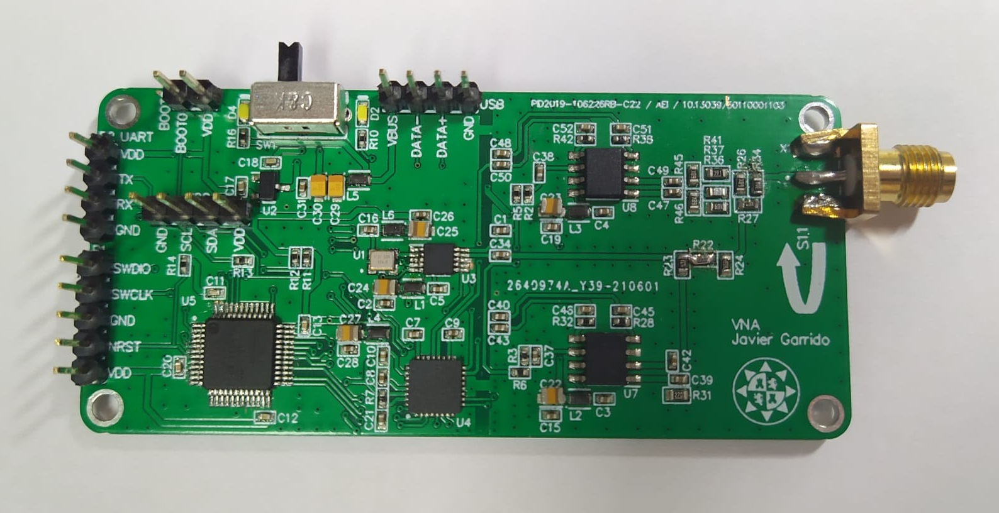
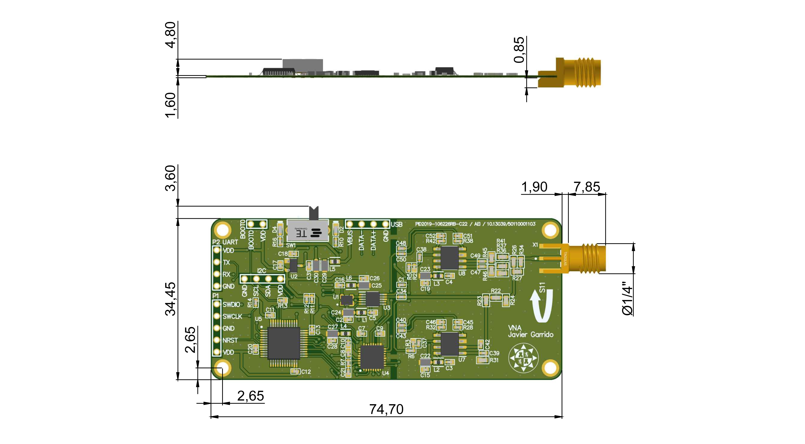
Microcontroller programming
In order to perform the programming of the Firmware of the STM32F072 microcontroller, the ChibiOS real-time operating system has been used, which offers a complete solution for embedded devices. The programming has been made with the C programming language in the Eclipse IDE for C/C++ Developers environment, carrying out all the programming in the Ubuntu operating system, a Linux distribution. The following picture shows a flowchart that summarizes the operation of the microcontroller program, which manages the entire VNA system.
 In the first place, the necessary libraries that have the definitions, configurations, variables and functions that will be used in the development of the program are included.
The operation of the program basically consists of the operation of two threads concurrently. One of the threads will constantly perform the frequency sweep that will allow obtaining the value of the measured reflection coefficient and the other thread executes directly in the 'main', reading and executing commands through the system Shell. In addition to this, the program has a series of functions and variables that will be used to establish and read values in the codec and the signal generator, update and calculate variables, define configurations, perform the reflection measurement, perform the error correction of the variables measured by the VNA and a series of functions that make the system Shell work, which allows changing configurations or requesting data to be displayed. Also, communication with the UART and USB is started.
In the first place, the necessary libraries that have the definitions, configurations, variables and functions that will be used in the development of the program are included.
The operation of the program basically consists of the operation of two threads concurrently. One of the threads will constantly perform the frequency sweep that will allow obtaining the value of the measured reflection coefficient and the other thread executes directly in the 'main', reading and executing commands through the system Shell. In addition to this, the program has a series of functions and variables that will be used to establish and read values in the codec and the signal generator, update and calculate variables, define configurations, perform the reflection measurement, perform the error correction of the variables measured by the VNA and a series of functions that make the system Shell work, which allows changing configurations or requesting data to be displayed. Also, communication with the UART and USB is started.
In the 'main' function, the HAL and kernel libraries are initialized, the default configuration is loaded, the connection to the Shell is initialized, the I2C communication is started, the communication with the signal generator and the codec is started, the I2S communication starts and the Watchdog starts, with its respective configurations. After that, the thread that is in charge of doing the frequency sweep begins its execution and, concurrently, in the 'main' itself, the reading and execution of commands is carried out by the Shell. The thread that performs the frequency sweep calculates, for a total of 101 points, the reflection coefficient for each frequency from the values read from the codec and, after that, applies the error correction to each measured point. At the same time, it makes an LED blink to check that the reading is taking place.
Once the programming is done, the 'make' command will be used from an Ubuntu terminal to compile and generate the program that will be uploaded to the STM32F072 microcontroller, which reads the instructions of the 'Makefile' file generated by Eclipse, which indicates the dependencies between the files of the program and the specifications of the microcontroller. Finally, the microcontroller is made to enter DFU mode by connecting the jumper that joins BOOT0 to VDD, the microcontroller is connected to the Ubuntu computer via USB and the command 'make flash' is executed in the terminal to update the Firmware through the USB.
Design of the datalogger with ESP32 in Micropython
In order to communicate and collect data with the designed VNA, a Datalogger has been implemented in MicroPython with an ESP32 using the 'Thonny' IDE for MicroPython. The ESP32 communicates with the VNA via UART by sending commands that the VNA system Shell will interpret and execute, performing the appropriate actions.
The commands sent via UART by the ESP32 are used to calibrate the VNA with the OSL (Open-Short-Load) standard and to collect the data of the reflection coefficient of a frequency sweep. In addition, the code stores the data in text files so that it can be processed more easily later.

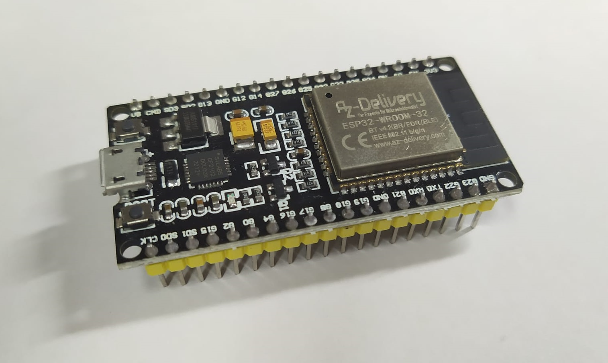
In addition to the functions indicated above, an SDI-12 (Serial Digital Interface at 1200 baud) communication protocol has been implemented in the ESP32 in MicroPython for sending the measured data to a datalogger that uses the same protocol. The SDI-12 protocol employs three signal lines: 0 V - 5 V data line, 12 V power line and ground line.
In order to implement this protocol in ESP32, a 1200 baud UART has been programmed that allows communication in both directions. To get a single 0 V - 5 V data line from the UART, the circuit shown in the figure below has been designed.
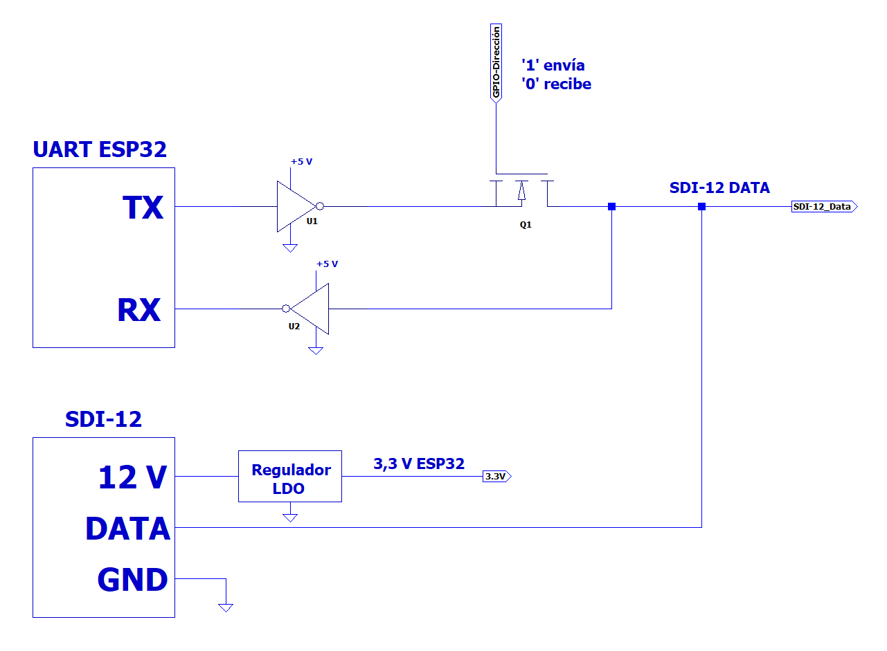
In this circuit, the MOSFET is controlled by a GPIO (General Purpose Input/Output) of the ESP32, indicating the direction of the data. When the UART is in transmission mode, it sends the signal from the TX pin through a 5 V powered inverter. This inverts the signal and converts it to 0 V - 5 V levels. The GPIO then triggers the gate of the MOSFET to allow the inverted transmission to pass through the SDI-12 data line. Once the transmission is complete, the GPIO disables the MOSFET gate, allowing signals from the SDI-12 data line to travel to a second inverter where they are inverted and sent to the RX pin. Furthermore, to complete the SDI-12 pin standard, the ESP32 is powered by the 12 V from the master after passing through a voltage regulator, which transforms it to 3.3 V. The component used for the inverters is the Texas Instruments SN74LVC2G14 double Schmitt inverter, the Fairchild FDV303N for the MOSFET and the Texas Instruments REG102 at 3.3 V for the LDO (Low-Dropout) regulator.
The code implemented in MicroPython to perform this function is part of the previously introduced code. Through the protocol, the ESP32 can send the data corresponding to the measurements of the reflection coefficient and the calculation of the complex permittivity, among other things.
Datalogger schematic
Using Altium Designer, firstly, the Datalogger schematic has been designed, which can be seen in the following picture.
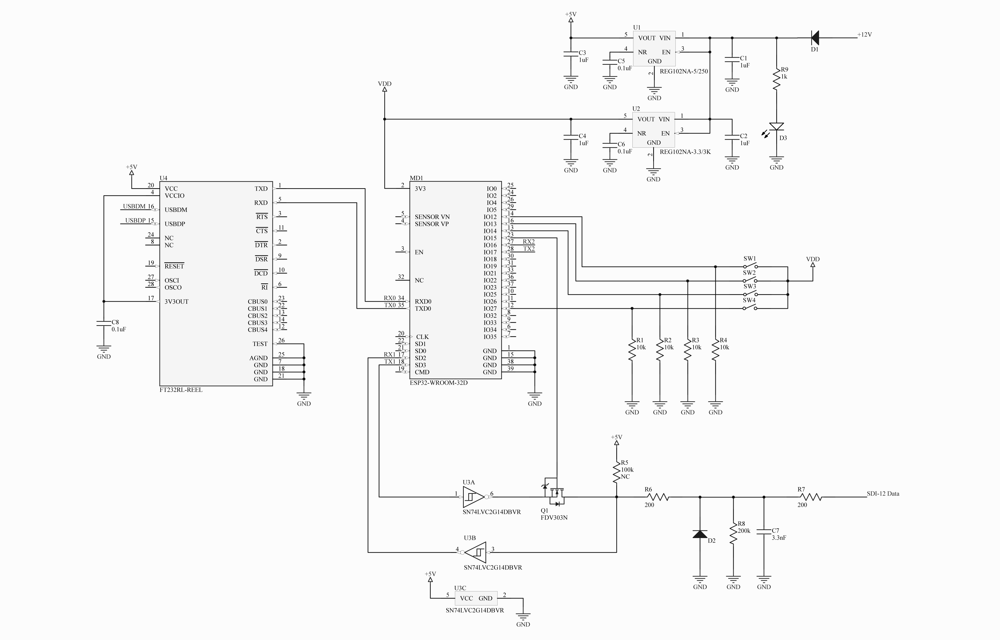
In the first place, a power supply part has been included that starts from the +12 V of the SDI-12 master and, after passing through two voltage regulators U1 and U2, voltages of +5 V and +3.3 V (VDD) are obtained, respectively. The +5 V voltage will serve to power the circuit's inverters, and the VDD voltage will power the ESP32. In addition there is an LED that indicates that the Datalogger is connected to the master. To carry out the communication and programming of the ESP32, a USB to UART gateway has been added, the FT232RL, which is also powered from +5 V. The data comes from the USB through the USBDP and USBDM pins and, at the output of the FT232RL, the RXD and TXD signals are connected to the UART0 of the ESP32, formed by the RX0 and TX0 pins.
After these stages, there is the ESP32, which manages the entire Datalogger system. First, it has four switches SW1, SW2, SW3 and SW4 that allow the Datalogger to carry out the actions of taking measurements from the VNA and saving a frequency sweep, doing the 'Load' calibration, doing the 'Open' calibration and doing the 'Short' calibration, respectively. Finally, there is the UART/SDI-12 adaptation stage that has been described previously, powered at +5 V and made up of two inverters with hysteresis and a MOSFET controlled by the ESP32 that manages the direction of the data flow. After this, a protection network of the SDI-12 data line has been added.
Datalogger PCB
Once the Datalogger schematic has been designed, we proceed to the design of its PCB following the strategy indicated in the VNA PCB design section. First of all, the components are selected and placed conveniently on the PCB, in such a way that the lengths of the tracks are minimized as much as possible, and trying to occupy the least space possible.
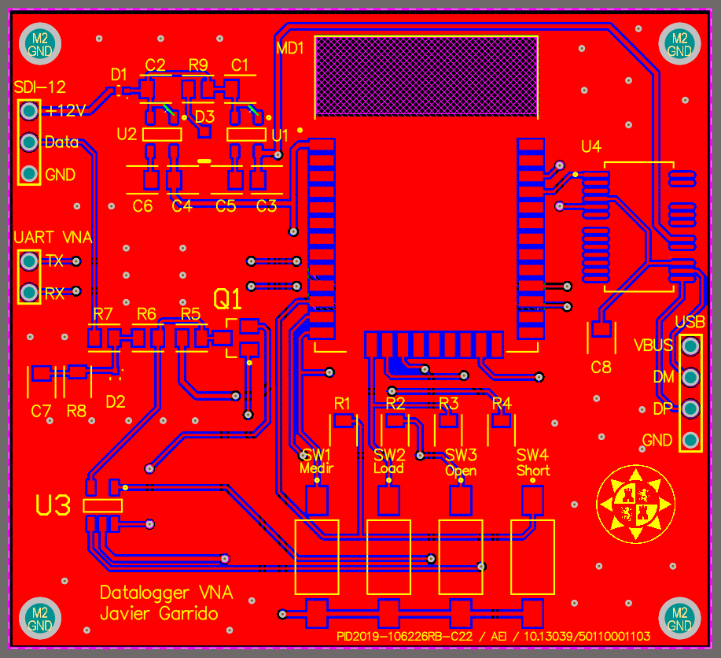
Once the components are placed, the size and shape of the PCB, including the drills, are delimited. Then, the tracks are traced, which will connect the different components of the board with each other. The size of the tracks has been 0.4 mm for the power part and 0.25 mm for the rest of the tracks.
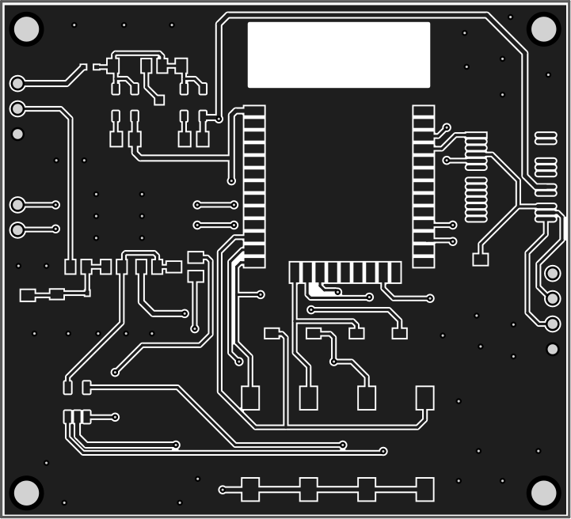
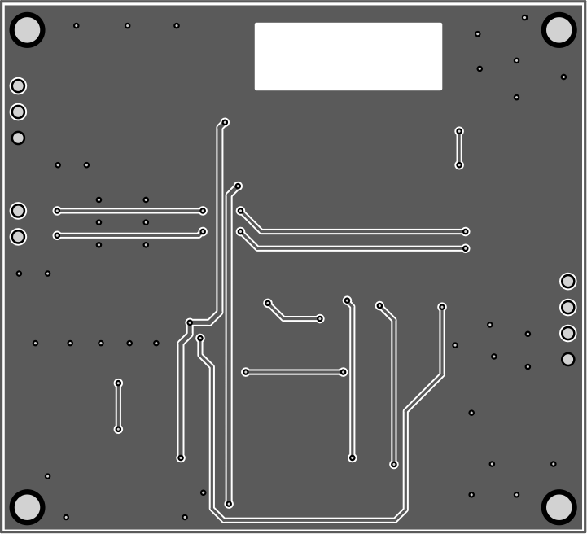
After tracing the tracks, a ground plane has been made, both in the top layer and in the bottom layer. In addition, to improve dissipation, a series of vias have been made along the PCB that connect both layers in the GND network. Finally, the name of the components and ports has been placed, and the UPCT logo, the name of the author and the name of the device have also been added.
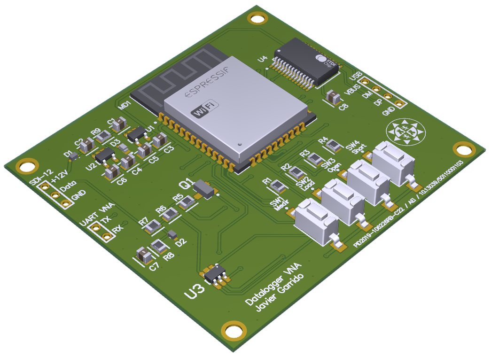
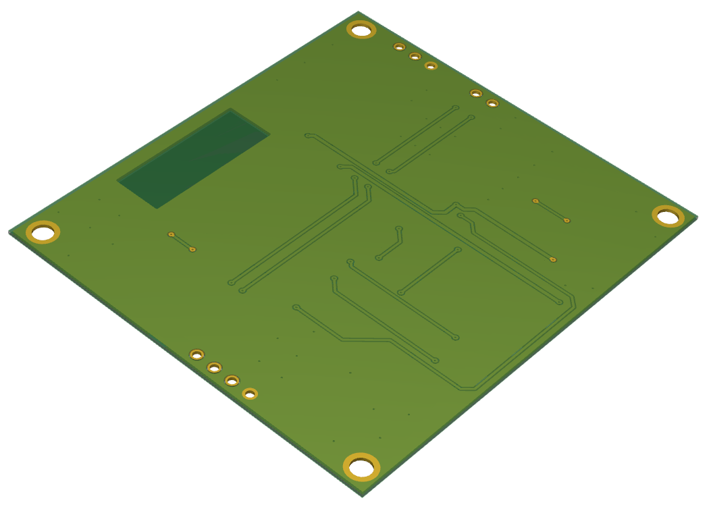
Lastly, due to lack of time when ordering the PCB and the components, it has not been possible to physically manufacture the PCB. However, it has been possible to test the operation of the design by performing the same assembly on a rapid prototyping board, obtaining the expected results, which will allow obtaining the data of the VNA designed in the experimentation phase.
Experimental study
In the experimental phase of the project, the permittivity of different liquids and air has been measured using the designed VNA. The measurements have been carried out using the reflection method in an open-ended coaxial probe and, for this, it has been necessary to couple an open-ended coaxial probe to the VNA. The calibration of the VNA with the coaxial probe has also been carried out after the measurements taking some reference media.

The method consists of introducing the probe into the liquid on which the measurement is to be made and, from the VNA, a frequency sweep is made through the probe, so that it measures the amount of signal that is reflected through of the material, calculating the reflection coefficient S11 from it.
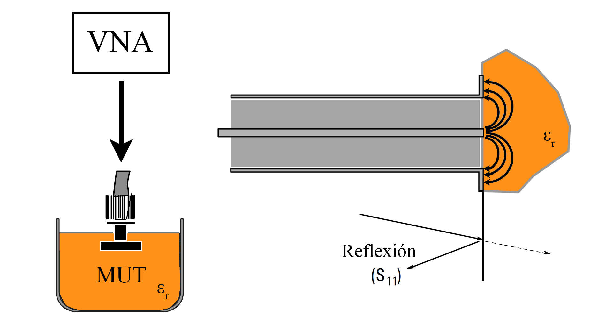
The designed VNA offers as output the reflection coefficient S11 of the dielectric medium measured as a function of frequency. Five different reference liquids (distilled water, acetone, isopropanol, methanol and ethylene glycol) and air have been measured.
The block diagram corresponding to the assembly carried out to perform the tests can be seen in the following figure. The VNA, which is programmed via USB from the PC, performs the measurements on the Material Under Test (MUT) through the open-ended probe, and the Datalogger, which also communicates via USB with the PC, requests the data of the measurements made to the VNA via UART, sharing said information through the SDI-12 protocol with an SDI-12 master if it was connected.
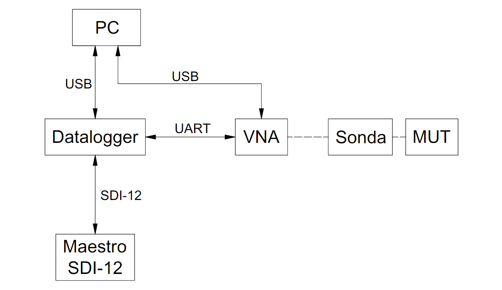
To make the measurements, we first set the VNA firmly at a certain height. Next, an SMA coaxial cable is connected to extend the measurement distance. After that, the VNA is calibrated at the end of the cable, by connecting the 50 Ω Open-Short-Load (OSL) calibration standard. This allows correcting systematic errors during measurements. Then, the open-ended coaxial probe is connected to the end of the SMA coaxial cable. With this probe, measurements will be made on the different materials. The Datalogger is also connected via UART.
Now, a first measurement is made to obtain the air measurement. With this measurement registered, the measurement is carried out on the five remaining liquids. For each one, a beaker is filled with the liquid and its temperature is determined with a thermocouple. Then, the coaxial probe is introduced inside the beaker, so that the bottom plane of the probe is submerged in the liquid. After verifying that no microbubbles have formed between the plane of the probe and the liquid, the liquid is measured, and this procedure is repeated for the five liquids.
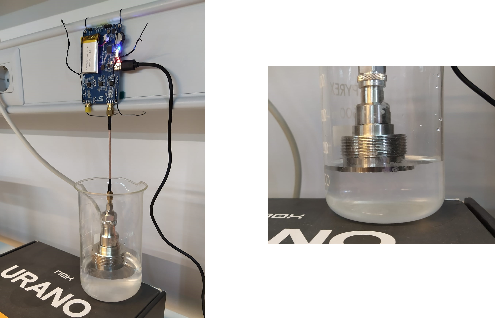
As a last step, the calibration of the VNA has been carried out with the open-ended coaxial probe to calculate the permittivity, using the Open-Water-Liquid (OWL) calibration. This will allow us to calculate the complex permittivity from the complex reflection coefficient S11 measured with the VNA. The calibration has been carried out using air, water and a liquid that has been rotated between methanol, isopropanol, acetone and ethylene glycol, so that the liquids not used to calibrate in each case have been used to validate the calibration.
In order to apply the OWL calibration, it is necessary to know the value of the permittivity of the different materials in the frequency spectrum. For this, a series of dielectric dispersion models have been used as a reference. To automate the complete OWL calibration process with all liquids, a code has been implemented in MATLAB, which does everything described. Finally, the code obtains the permittivity value from the reflection coefficient for each calibration performed with each liquid, calculating the error obtained in each case.
Results
First of all, these are the results obtained for the reflection coefficient at different frequencies of the different materials in the test for the designed VNA, in real part format (solid line) and imaginary part format (dashed line).
It can be seen that, at high frequency, the measured reflection coefficient begins to describe a certain ripple in all materials, both in the real and in the imaginary part.
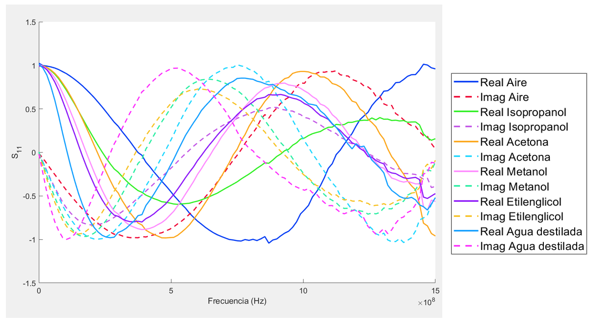
Secondly, these are the complex permittivity results obtained after OWL calibration with each liquid from the reflection coefficient measured by the VNA, using the code implemented in MATLAB. The dielectric dispersion model for each permittivity is represented with a solid line and, with asterisks, the values corresponding to the estimated permittivity after calibration. An increase in dispersion can be observed when the high frequency is reached, around 1 GHz, where the calculations begin to differ from the models for the permittivities. Once the calibration has been done with all the liquids, we proceed to evaluate which calibration has generated the lowest root mean square error (RMSE), which has been the calibration with acetone.
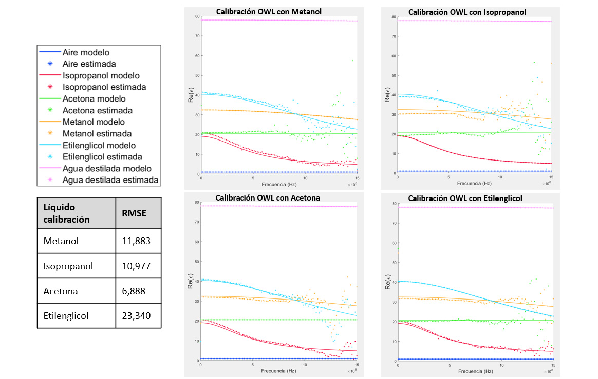
Based on these results, the MicroPython code of the Datalogger has been extended, including the value of the data obtained during this calibration for all frequencies, so that the Datalogger will be able to calculate the permittivity from the reflection coefficient measured by the designed VNA.
Finally, a test has been carried out with the complete system, measuring the reflection coefficient of isopropanol with the designed VNA, while the data of S11 was recorded in the Datalogger. After processing it, the values of the reflection coefficient and the permittivity of isopropanol have been obtained in text files generated by the Datalogger, in real and imaginary part format.
Lastly, the data generated by the Datalogger has been graphed, and the results are shown in the pictures below, for S11 and for permittivity, respectively. It can be seen that they are curves that are very similar to the corresponding values for that liquid. For the permittivity, the data obtained from the Datalogger can be seen in red and, in dashed black, the isopropanol permittivity model, and it is observed that the curves are very similar but, at high frequency, a deviation appears, being quite precise up to about 1 GHz.
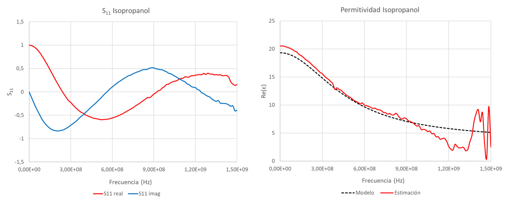
Conclusions and future work
First of all, a low-cost VNA has been obtained. In addition, the size of the VNA is very small. The designed VNA has also been found to have high accuracy. Added to this, a Datalogger with SDI-12 communication has been designed that collects the VNA data, and the VNA has been provided with operability through its calibration for the calculation of the permittivity. Finally, the VNA has a good reproducibility and repeatability for several measurements that have been made.
On the other hand, this project leaves the door open to new improvements. An interesting line to develop is the expansion of the frequency range that the VNA is capable of measuring, in order to obtain more characteristics of the media under test at high frequencies. At the same time, the design and definition of an encapsulation and isolation system with 3D printing to protect the VNA circuitry and improve its portability is pending. In addition, after having obtained a good precision in the measurements, it is intended to carry out its validation in the field, generating a large number of measurements and taking commercial VNA as a reference.
The possibility of applying the VNA designed in biomedical laboratories is also open, with the aim of carrying out the study of the dielectric properties of tissues for the detection of diseases such as cancer. Additionally, there is the possibility of expanding the functionality of the Datalogger, allowing it to make a Wi-Fi connection so that it can share the recorded data with any part of the world through the Internet. Finally, with the recent advance of Machine Learning, an artificial neural network could be trained, with the aim of achieving the classification of the media under test from the data of its complex permittivity spectrum.
If you want to go more into detail about this project and the theory, I will leave you my complete Final Degree Project in case you want to read it, as well as all the schematics, PCBs, diagrams and codes I've used.
► Download Final Degree Project
► Download Block diagram Two-port VNA
► Download Schematic Two-port VNA
► Download Block diagram One-port VNA
► Download Schematic One-port VNA
► Download PCB tracks VNA
► Download Schematic Datalogger
► Download PCB tracks Datalogger
► Download PCB measurements VNA
► Download Code Flowchart of the VNA
► Download VNA diagram connections for measurements
► Download 'main' code of the VNA in C language
► Download 'main' code of the ESP32 Datalogger in MicroPython
► Download MATLAB code